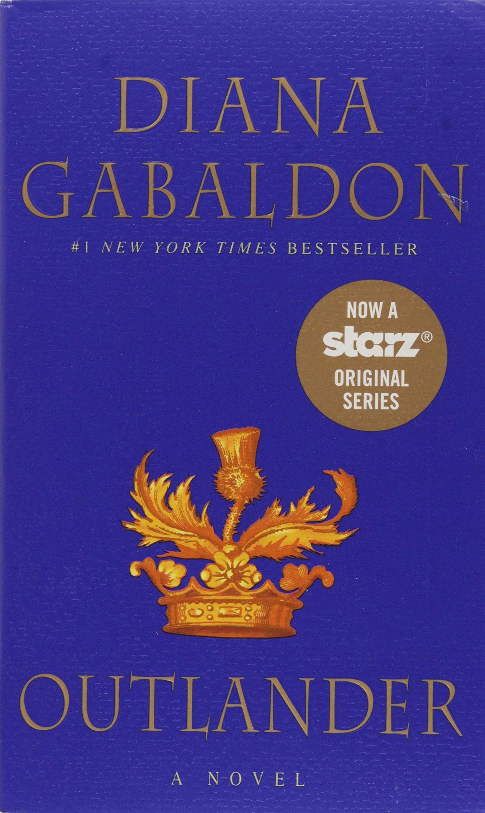
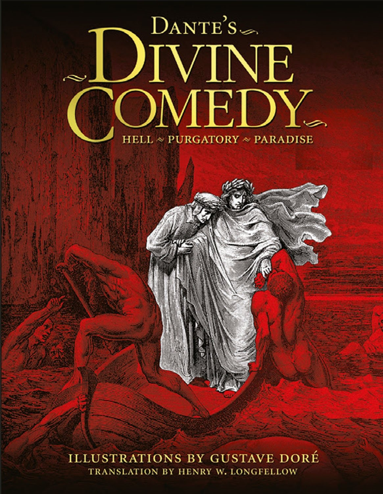
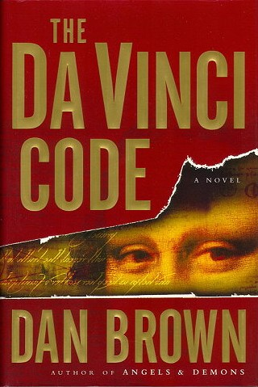

Outlander is the first in a series of eight historical multi-genre novels by Diana Gabaldon.
Published in 1991, it focuses on the Second World War–era nurse Claire Randall,
who travels through time to 18th century Scotland and finds adventure and romance with the dashing Jamie Fraser.
A mix of several genres, the Outlander series has elements of historical fiction, romance, adventure and science
fiction/fantasy. Outlander won the Romance Writers of America's RITA Award for Best Romance of 1991. Source: Wikipedia
"Dante's Divine Comedy" By Dante Alighieri

The Divine Comedy is a long narrative poem by Dante Alighieri, begun c. 1308 and completed in 1320, a year
before his death in 1321. It is widely considered the preeminent work in Italian literature, and is seen as one
of the greatest works of world literature. The poem's imaginative vision of the afterlife is representative of
the medieval world-view as it had developed in the Western Church by the 14th century. It helped establish the
Tuscan language, in which it is written, as the standardized Italian language. It is divided into three parts:
Inferno, Purgatorio, and Paradiso. Source: Wikipedia
"IT" By Stephen King
It is a 1986 horror novel by American author Stephen King. It was his 22nd book and 18th novel written under his own name.
The story follows the experiences of seven children as they are terrorized by a being that exploits the fears and phobias
of its victims to disguise itself while hunting its prey. "It" primarily appears in the form of a clown to attract its
preferred prey of young children. The novel is told through narratives alternating between two time periods, and is largely
told in the third-person omniscient mode. It deals with themes that eventually became King staples: the power of memory,
childhood trauma and its recurrent echoes in adulthood, the ugliness lurking behind a fa&çade of small-town quaintness, and
overcoming evil through mutual trust and sacrifice.
Source: Wikipedia
"The Da Vinci Code" By Dan Brown

The Da Vinci Code is a 2003 mystery-detective novel by Dan Brown. It follows symbologist Robert Langdon and cryptologist
Sophie Neveu after a murder in the Louvre Museum in Paris, when they become involved in a battle between the Priory of
Sion and Opus Dei over the possibility of Jesus Christ having been a companion to Mary Magdalene. The title of the novel
refers, among other things, to the finding of the first murder victim in the Grand Gallery of the Louvre, naked and posed
similar to Leonardo da Vinci's famous drawing, the Vitruvian Man, with a cryptic message written beside his body and a
pentacle drawn on his chest in his own blood.
Source: Wikipedia
{kind=link}
{kind=link}

{kind=link}